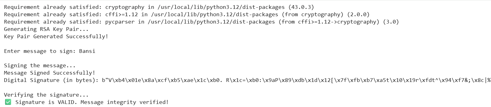

Code for RSA
# Digital Signature System using RSA and SHA-256
from cryptography.hazmat.primitives import hashes
from cryptography.hazmat.primitives.asymmetric import rsa, padding
from cryptography.hazmat.primitives import serialization
from cryptography.hazmat.backends import default_backend
from cryptography.exceptions import InvalidSignature
# -----------------------------
# 1. Generate RSA Key Pair
# -----------------------------
print("Generating RSA Key Pair...")
private_key = rsa.generate_private_key(
public_exponent=65537,
key_size=2048,
backend=default_backend()
)
public_key = private_key.public_key()
print("Key Pair Generated Successfully!\n")
# -----------------------------
# 2. Take Message Input
# -----------------------------
message = input("Enter message to sign: ")
message_bytes = message.encode()
# -----------------------------
# 3. Sign the Message (Private Key)
# -----------------------------
print("\nSigning the message...")
signature = private_key.sign(
message_bytes,
padding.PSS(
mgf=padding.MGF1(hashes.SHA256()),
salt_length=padding.PSS.MAX_LENGTH
),
hashes.SHA256()
)
print("Message Signed Successfully!")
print("Digital Signature (in bytes):", signature)
# -----------------------------
# 4. Verify the Signature (Public Key)
# -----------------------------
print("\nVerifying the signature...")
try:
public_key.verify(
signature,
message_bytes,
padding.PSS(
mgf=padding.MGF1(hashes.SHA256()),
salt_length=padding.PSS.MAX_LENGTH
),
hashes.SHA256()
)
print("✅ Signature is VALID. Message integrity verified!")
except InvalidSignature:
print("❌ Signature is INVALID. Message may be tampered!")
Output
